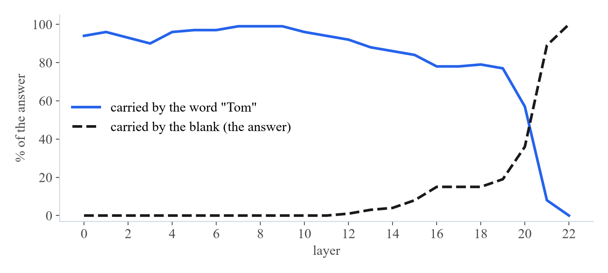
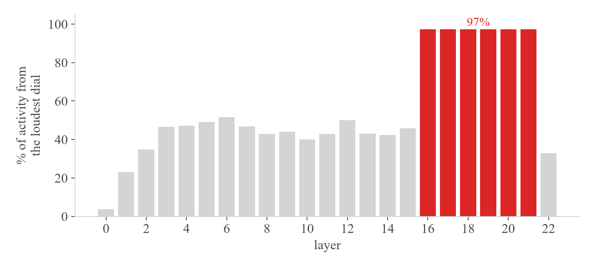
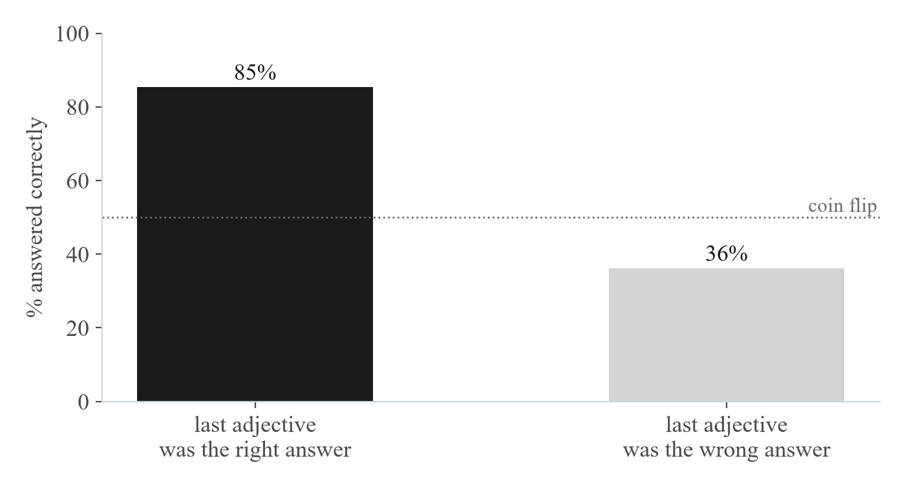
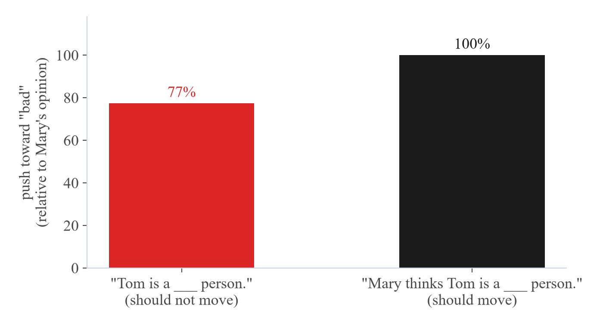
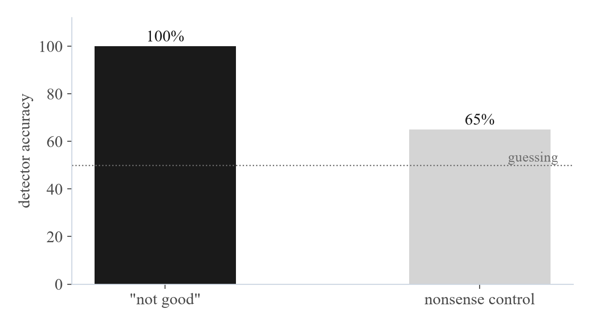

Does an AI Know Whose Opinion It Is?
1. Introduction
Read this sentence.
"Tom is a good person, Mary thinks he is not."
You probably understood three things without even trying. "He" is Tom. Tom is a good person. And the "not" is only what Mary thinks. The sentence never says Mary is right. It just tells you she disagrees.
My friend DeadMeme sent me this exact sentence with a simple idea. Run it through an AI model, look inside, and watch how the neurons light up for each word. I couldn't stop thinking about it, so I tried it.
The short version is that the model knows who "he" is, every single time. It even works out what "not good" means. But it doesn't keep track of whose opinion that is. When Mary says Tom isn't good, the model's own view of Tom drops almost as much as Mary's.
Let's go through how I got there.
2. What We Want to Know
So I split it into four questions.
- Who is "he"? Does the model connect "he" to Tom and not to Mary?
- Does "good" stick to Tom? Does the quality land on the right person?
- What does "not" do? Does the word actually change anything inside?
- Is the "not" just Mary's opinion? Or does the model start believing Tom isn't good?
3. A Quick Look Inside the Model
The model I used is ModernBERT. It's not a chatbot. It reads a whole sentence at once, and it was trained on a huge amount of text where some words were hidden and it had to guess them back. So filling in blanks is the one thing it's really good at.
When it reads a sentence, every word gets turned into a list of 768 numbers. You can think of each number as a small dial. When people say neurons "light up," this is basically what they mean. Some dials turn up and some turn down, depending on the word and everything around it.
Then the sentence goes through 22 steps, called layers. At every layer, each word's dials get updated based on all the other words in the sentence. So at the start, "he" is just "he." By the end, its dials have been shaped by "Tom," "Mary," "good," and "not." Whatever the model understands about the sentence has to live somewhere in those dials.
I also ran everything on the original BERT from 2018. It mostly behaves the same way, so I'll only bring it up when it doesn't.
4. How I Tested It
Staring at dials on their own doesn't tell you much. Thousands of numbers change for every word, and most of those changes mean nothing to us. So I used three kinds of tests.
- Ask it. Hide a word and see what it guesses. For example, "Tom is good, Mary thinks ___ is not." If it fills in "he," it has worked out who the sentence is about.
- Look inside. Check which dials change, and at which layer. This tells you where the information might be, but not whether the model actually uses it.
- The swap test. This is the one I relied on most. Take two versions of a sentence, for example one with Tom and Mary swapped. Copy one word's dials at one layer from the second version into the first. If the model's answer changes, that word at that layer was carrying the answer. Do this for every word at every layer, and you get a map of where the answer travels inside the model.
I also stuck to a few rules. I wrote down my guess before every test, so I couldn't fool myself afterwards. I used thousands of sentences, not just one, with different names and different adjectives (kind, rude, smart, selfish, and so on). And every test had a control, a change that shouldn't matter, just to check that the effect was real.
5. Who Is "He"? It Knows. Every Time.
Let's start with the good news, because this is the part the model nails.
I asked it to fill in "Tom is good, Mary thinks ___ is not." It said "he" in 100% of the sentences. When I swapped the roles to "Mary is good, Tom thinks ___ is not," it switched to "she." I also added someone who has nothing to do with the story, like "..., says Paul" versus "..., says Kate," and the answer barely moved. So it isn't just reacting to whatever names happen to be nearby.
There was one more shortcut it could be using. In all those sentences, Tom came first. Maybe it just picks the first person it sees. So I flipped it to "Mary met Tom. Tom is good, but Mary thinks ___ is not." Now Mary is both the first name and the closest name to the blank. A lazy model would say "she." ModernBERT still said "he," 100% of the time. It really is working out who the sentence is about.
Now for where it happens. The swap test showed that the answer sits on the word "Tom" for 20 of the 22 layers. Then, in the last two, it jumps across to the blank. The model doesn't work it out slowly, word by word. It holds the answer on the name and only pulls it over at the very end.

It's also done by a small number of parts. Each layer has 12 attention heads, which are small units that decide which other words each word should look at. Two of them, in layers 20 and 21, do more than half of the work between them. That's right where the chart above shows the answer moving across to the blank.
The fun part is that my friend had run his own experiments on a completely different text, a passage from a novel, and found the same thing. Pronouns get connected to people in the late layers, roughly 15 to 21. BERT does the same thing too, just earlier, since it only has 12 layers.
6. The Number That Almost Fooled Me
Getting to that result wasn't smooth, though.
My very first look was promising. Inside the model, "he" started looking more like "Tom" than "Mary." But then I realized that doesn't prove much. "Tom" and "he" are both male. The model could just be matching a male word to a male name, without understanding anything.
So I tried sentences with two men instead, like "Tom is a good person, John thinks he is not." Now gender can't help. And that's where ModernBERT looked hopeless. In its later layers, every word looked exactly the same as every other word. The results were completely flat.
It took me a while to figure out why. One single dial, number 251, was taking up 97% of all the activity in those layers. It was so loud that it drowned out the other 767. Every word looked identical because every word was basically just "dial 251."

Once I adjusted for it, the signal showed up right where it should be. The model did connect "he" to Tom, even with two men, in exactly the layers that had looked flat.
The lesson I took from this is to never trust a picture of neurons lighting up before checking that one of them isn't drowning out the rest. I'll come back to dial 251 later, because my friend had a question about it.
7. Does "Good" Stick to Tom? Not Really.
My first test here looked fine. I gave the model "Tom is good" and asked "Tom is ___," and it leaned toward "good." Then I noticed the problem with my own test. The word "good" was right there in the sentence, and the word "bad" never was. The model could just repeat a word it had seen, without connecting it to anyone.
So I made it fair and put both words in, like "Tom is good, but Mary is bad. In short, Tom is ___." Now repeating a word doesn't help, because both words are there. To get it right, the model has to know which quality belongs to which person.
It mostly didn't. Instead, it picked whichever adjective came last. When the last adjective happened to be the right answer, ModernBERT got it right about 85% of the time. When it wasn't, only about 36%. For "Tom is good, but Mary is bad. In short, Tom is ___," it said "good" only 44% of the time, which is worse than a coin flip.

What happens inside is more interesting. You can check what the model would answer if it stopped at each layer. In the middle layers, it actually leans slightly toward the right answer, around 55 to 61%. Then the last few layers push hard toward the last adjective and overrule it.
The swap test showed the same thing from another angle. Both adjectives pull the answer toward themselves, like a tug of war, and Mary's adjective, the one that came last, wins. BERT is even worse here. It's basically a "repeat the last word" machine.
8. What Does "Not" Actually Do?
To see what "not" does on its own, I compared two sentences that are identical except for one word.
- "Mary thinks he is not." (she disagrees)
- "Mary thinks he is too." (she agrees)
"Not" has a real effect. It clearly pushes the model's answers toward "bad," so the model isn't ignoring the word.
The swap test showed its path too. The information sits on the word "not" for most of the model, some of it passes through "good" along the way, and it reaches the answer in the late layers. "Tom" and "Mary" carry none of it.
I also looked for a single dial that means "not." There isn't one among the 768. The effect is spread thinly across lots of them. So the model does notice "not." What I wanted to know next is who it thinks the "not" belongs to.
9. Does It Know It's Only Mary's Opinion? No.
This is the question I cared about most.
I gave the model the original sentence and asked it two different things.
- "Tom is a ___ person." The right answer is still "good." Mary's opinion doesn't change the facts.
- "Mary thinks Tom is a ___ person." Here the right answer flips to "bad," because that's what Mary thinks.
A model that understood whose opinion it was would treat these two very differently. The "not" should hit the second question hard, and leave the first one alone.
That's not what happened. The "not" pushed the answer about Tom himself 77% as hard as it pushed Mary's opinion. The model still leans slightly toward "good" for Tom, but only just. Mary's opinion drags the facts about Tom down almost as much as it drags down what she thinks. BERT does the same, at 86%.

At this point you might be wondering whether it just doesn't understand "not good" at all. Fair question. So I trained simple detectors on the model's dials, to see whether the combined meaning "Mary thinks not good" can be read from inside. It can, 100% of the time. As a control, I trained the same kind of detector on a nonsense combination of features, and at the same spot in the sentence it only got to 65%.

Here's what this chart means. A detector is a very simple program that looks at the model's dials and tries to answer one yes-or-no question. I showed it the dials for thousands of versions of our sentence, some with "not" and some with "too," some with good adjectives and some with bad ones. Its job was to answer whether Mary thinks Tom is good or not good.
That answer depends on two things at once, the adjective and the "not," so the detector can only get it right if the model has combined them somewhere in its dials. To make it fair, I tested it on adjectives it had never seen during training. It got the answer right 100% of the time. That's the dark bar.
The light bar is the control. I gave the same kind of detector a made-up question that also mixes two things together, but one the model has no reason to care about. Read from the same spot, it only managed 65%, much closer to the 50% you'd get by guessing (the dotted line) than to 100%. So the 100% isn't just the detector being clever. The model really does build the meaning "not good" on its own.
So the model clearly works out what "not good" means. It just doesn't attach it to Mary.
One thing to keep in mind is that the detector can't tell the difference between "Mary's opinion is not good" and "these words say not good." So what I can say is that the model builds the meaning. I didn't find anything that keeps track of whose opinion it is.
There's one small bright spot, though. I gave it two people who disagree, one who "knows" and one who only "thinks," like "Mary thinks Tom is bad, but Kate knows he is good." ModernBERT sided with the one who "knows" about 67% of the time, where pure guessing would give 50%. So it has a faint sense that thinking something is weaker than knowing it. BERT doesn't have even that.
10. "Who" and "What" Use Different Parts
The swap tests turned up one more thing. The attention heads that carry "who is he" into the answer, and the heads that carry "good or bad," are completely different. Of the top five for each, none overlap, in either model.
So the model handles "who" and "what" side by side, with separate parts, in the same late layers. They only meet at the very end, when it gives its answer. That matches everything else in this post. It's very good at keeping track of people, and much weaker at keeping track of what's true about them and who said it.
11. So What Is Dial 251?
Remember the dial that broke everything early on? It turned out it had broken my friend's measurements too, in the exact same layers. He asked if I could study it on its own, using a method from Nick Cammarata's essay Neural Networks Are Already Clean.
The idea behind the method is pretty simple. Run a lot of normal text through the model. Write down when a neuron fires the most and when it fires the least, because every neuron has two sides. Look at what those moments have in common and give it a name. Then switch it off and check that the right thing breaks.
So I ran 400 paragraphs of Wikipedia through it.
Dial 251's biggest moments are almost all on the word "the", plus the hidden marker at the end of every piece of text. On those, it goes below −45,000, when it normally sits around −200. Its other side, where it's smallest, is full stops and commas. That's it. It's not about people, or goodness, or anything at all. It reacts to the most boring parts of language.
Then I switched it off, and the model fell apart.
| What I switched off | Fill-in-the-blank error | "Who is he" score |
|---|---|---|
| Nothing | 1.67 | 100% |
| Dial 251 | 9.27 (close to random guessing) | 50% (a coin flip) |
| A random dial | no change | 100% |
Switching off dial 251 only on "the" and the end-of-text markers, or only everywhere else, still broke the model badly. So dial 251 doesn't mean anything on its own, but the model can't work without it.
Here's the catch, though. Cammarata's essay is about a different kind of neuron, the ones inside each layer's small processing block, not the 768 dials that get passed between layers. So I ran the same method on those too, picking the ones that react most to our sentence. Some of them were surprisingly clean.
- A negation neuron. One side fires on "not," "rejected," "against," and "don't." The other side fires on "never," "lacking," and "removed."
- Praise neurons. They fire on words like "positive," "success," "perfect," and "award."
- A stories neuron. It fires on "novel," "character," "plot," and "role."
About half of the nine I checked were this easy to read. The rest were a mess.
My favourite bit was this. Of the three neurons that best separate "Mary thinks he's good" from "Mary thinks he's not good," two are exactly the negation neuron and one of the praise neurons. The third is a mix. None of them is about Mary. The model handles "not good" with general-purpose parts, and nothing in there seems to say "this belongs to Mary." It's the same thing I found in the rest of this post, just at the level of single neurons.
12. Where I Was Wrong
Since I wrote my guesses down before every test, I can tell you exactly where I got it wrong.
- I expected ModernBERT to connect "good" to Tom most of the time. On the hard version, it got 44%.
- I expected the "not good" signal inside to be weak. It was readable 100% of the time.
- I expected no single attention head to do more than about a third of the "who is he" work. One head in BERT does 44%.
- And early on, I thought ModernBERT understood nothing about pronouns. That was dial 251 fooling me.
I only know all this because I wrote my guesses down before each test. Otherwise I'd probably have convinced myself I expected these results all along.
13. A Few Limits
These are fill-in-the-blank models, not chatbots, so the AI you talk to every day might behave differently. I used one family of sentences, with many names and adjectives, but only ones the model reads as a single word. Some of my phrasing, like "In short," may have nudged it toward the end of the sentence. And some of the later tests ran on my laptop, with smaller samples than I'd like.
14. Conclusion
The model is really good at who. It knows who "he" is, every single time, and it holds onto that until the very end.
It understands "not good." The meaning is clearly there inside it.
But it doesn't keep track of whose opinion that is. When Mary says Tom isn't good, the model's own view of Tom drops almost as much as hers.
So it gets the meaning of the sentence, but it loses track of who said what.